Scanner & Patcher
Scanner and Patcher is an open source software which comes with a set of web vulnerability scanner and also provide patches for it.
Scanner and Patcher is an open source software which comes with a set of web vulnerability scanner and also provide patches for it.
This is the documentation for open source Scanner and Patcher Project.
Open Source Scanner and Patcher is a software which comes with a set of web vulnerability scanners and it provides patches for it. In this we are using powerful and specialized open source tools which enable us to carefully and thoroughly scan the given web application for a wide array of vulnerabilities. We have designed a solution where once a target web application has been entered in the program, the entire process can easily run without any need to monitor it. As for our patcher we have developed specific patches to patch vulnerabilities
A web application scanner explores a web application by crawling through its web pages and examines it for security vulnerabilities, which involves generation of malicious inputs and evaluation of application's responses. The scanners are automated tools that scan web applications to look for security vulnerabilities. They test web applications for common security problems such as cross-site scripting (XSS), SQL injection, and cross-site request forgery (CSRF).
This scanner uses different tools like nmap, dnswalk, dnsrecon, dnsenum, dnsmap etc in order to scan ports, sites, hosts and network to find vulnerabilities like OpenSSL CCS Injection, Slowloris, Denial of Service, etc.
A patch is a software update comprised code inserted (or patched) into the code of an executable program. Typically, a patch is installed into an existing software program. Patches are often temporary fixes between full releases of a software package.
Patches may do any of the following:
1. Fix a software bug.
2. Install new drivers.
3. Address new security vulnerabilities.
4. Address software stability issues.
5. Upgrade the software.
| 1. | IPv6 | 12. | STUXNET | 23. | Interesting Files |
| 2. | POODLE | 13. | Stress Tests | 24. | Injectable Paths |
| 3. | Firewall | 14. | WebDAV | 25. | Subdomains |
| 4. | LOGJAM | 15. | LFI, RFI or RCE. | 26. | MS-SQL DB Service |
| 5. | HEARTBLEED | 16. | XSS, SQLi, BSQL | 27. | ORACLE DB Service |
| 6. | Wordpress, SiteMap/Robot.txt | 17. | XSS Header not present | 28. | RDP Server over UDP and TCP |
| 7. | OpenSSL CCS Injection | 18. | Shellshock Bug | 29. | MySQL DB Service |
| 8. | FREAK | 19. | Leaks Internal IP | 30. | SNMP Service |
| 9. | Slowloris, Denial of Service | 20. | HTTP PUT DEL Methods | 31. | SMB Ports over TCP and UDP |
| 10. | STUXNET | 21. | Outdated | 32. | IIS WebDAV |
| 11. | Telnet Service | 22. | CGI Directories | 33. | X-XSS Protection |
| 1. | Whatweb | 9. | Davtest | 17. | nikto |
| 2. | Nmap | 10. | Theharvester | 18. | Whois |
| 3. | Golismero | 11. | Xsser | 19. | Ibd |
| 4. | Host | 12. | Fierce | 20. | Wapiti |
| 5. | Wget | 13. | Dnswalk | 21. | Dnsmap |
| 6. | Uniscan | 14. | Dnsrecon | 22. | Devtest |
| 7. | Wafw00f | 15. | dnsenum | 23. | sslyze |
| 8. | Drib | 16. | Dmitry |
"We have also worked on making separate programs which the user can utilize to scan for specific vulnerabilities but to make a complete scan for the list of vulnerabilities please utilize the full scanner."
Local File Inclusion (LFI) allows an attacker to include files on a server through the web browser. This vulnerability exists when a web application includes a file without correctly sanitising the input, allowing an attacker to manipulate the input and inject path traversal characters and include other files from the web server. An LFI attack may lead to information disclosure, remote code execution, or even Cross-site Scripting (XSS). Typically, LFI occurs when an application uses the path to a file as input. If the application treats this input as trusted, a local file may be used in the include statement.
This repository provides a scanning solution for the log4j Remote Code Execution vulnerabilities (CVE-2021-44228 & CVE-2021-45046). The information and code in this repository are provided "as is" and was assembled with the help of the Tribe N. This is not intended to be a 100% true positive solution; False negatives may occur.
This is a vulnerability which is extremely common with web applications which dynamically include external files. When web applications take user input (URL, parameter value, etc.) and pass them into file include commands, the web application might be tricked into including remote files with malicious code. Although almost all web application frameworks support file inclusion and they are perfectly secure. The issue begins when the user supplied input is accepted without proper validation. The malicious user can easily create backdoors, get unauthorized access to restricted data, run malicious code on the server, take complete control of the server etc. As said before most web application architectures allow for user input in the form of URL, parameter and value. When such user input is not sanitised and properly validated then the user can easily redirect the web application to an unsafe address where the security of the web application is ultimately compromised which maybe range from gaining unauthorized access to restricted data all the way to Cross Site Scripting (XSS) and thus eventually leading to a compromised system. PHP is particularly vulnerable to RFI attacks due to the extensive use of “file includes” in PHP programming and due to default server configurations that increase susceptibility to an RFI attack.
1. Scanner
2. Exploiter
1.1 Possibilities to reach https://www.google.com/
1.2 Possibilities to reach https://brave.com/
1.3 Possibilities to reach your server with RFI.
2.1 Traditional Exploitation.
2.2 Wrappers.
A SQL injection scanner is an automated tool used to verify the vulnerability of websites and web apps for potential SQL injection attacks. SQL injection is a code injection technique used to attack data-driven applications, in which malicious SQL statements are inserted into an entry field for execution . SQL injection must exploit a security vulnerability in an application's software, for example, when user input is either incorrectly filtered for string literal escape characters embedded in SQL statements or user input is not strongly typed and unexpectedly executed. SQL injection is mostly known as an attack vector for websites but can be used to attack any type of SQL database.
● python3 Sqli_scanner.py -u url -p payload
SQLi Scanner is a fully functional SQL injection vulnerability scanner (supporting GET and POST parameters)
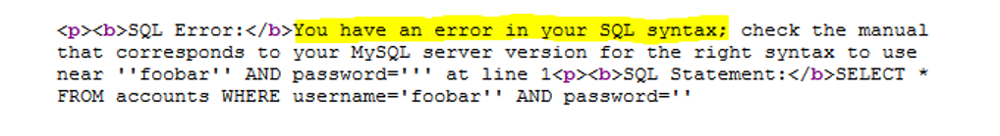As of optional settings it supports HTTP proxy together with HTTP header values User-Agent, Referrer and Cookie.
Cross-Site Scripting attacks are a type of injection, in which malicious scripts are injected into otherwise trustworthy websites. An attacker exploits a XSS vulnerability via a web application, generally in the form of a browser side script to a different end user. These vulnerabilities are quite widespread as they can occur anywhere an input is taken from a user without validating or encoding it and is used to generate an output. The end user’s browser has no way to know that the script should not be trusted and it will execute the script as it thinks the script came from a trusted source. Thus, the malicious script after injection can access any cookies, session tokens, or the other sensitive information retained by the browser and used with that site.
python3 xss.py -u url -p payload.txt
XSS Scanner (XSS) is a fully functional Cross-site scripting vulnerability scanner (supporting GET and POST parameters) written in under 100 lines of code.
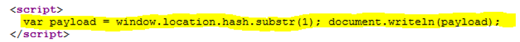As of optional settings it supports HTTP proxy together with HTTP header values User-Agent, Referrer and Cookie.
Check for .net padding oracle patch.
For our Patcher we have separate programs which will patch up different vulnerabilities. We cannot present a complete, compiled software at this present moment as these patches are complex and are written in different languages. To get the patcher up and running in time for the final inspection would not be possible as there are many languages which would need to be compiled into one.
When rendering AngularJS templates with a server-side templating engine like ERB or Haml it is easy to introduce XSS vulnerabilities. These vulnerabilities are enabled by AngularJS evaluating user-provided strings containing interpolation symbols (default symbols are {{ and }}).
This gem patches ERB/rails_xss and Haml so Angular interpolation symbols are auto-escaped in unsafe strings. And by auto-escaped we mean replacing {{ with {{ $root.DOUBLE_LEFT_CURLY_BRACE }}. To leave AngularJS interpolation marks unescaped, mark the string as html_safe.
This is an unsatisfactory hack. A better solution is very much desired, but is not possible without some changes in AngularJS. See the related AngularJS issue.
If you want to disable angular_xss in some part of your app, you can use
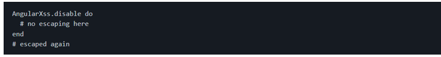1. Read the code so you know what you're getting into.
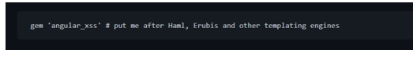
2. Put this into your Gemfile after other templating engines like Haml or Erubis:
3. Run bundle install.
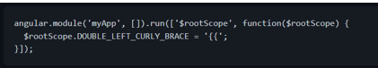
4. Add this to your Angular code (replacing "myApp" of course):
5. Run your test suite to find the places that broke.
6. Mark any string that is allowed to contain Angular expressions as #html_safe.
● Requires Haml. It could be refactored to only patch ERB/rails_xss.
● When using Haml with angular_xss, you can no longer use interpolation symbols in class or id attributes, even if the value is marked as html_safe. This is a limitation of Haml. Try using ng-class instead.
This project demonstrates an approach to support HTTP PATCH with JSON Patch and JSON Merge Patch for performing partial modifications to resources in Spring, as described in my [blog][blog.post]. I also have put together a [Postman collection][repo.postman] so you can play around with the API.
As I have seen lots of misunderstanding on how PATCH works, I aim to clarify its usage before diving into the actual solution.
Consider, for example, we are creating an API to manage contacts. On the server, we have a resource that can be represented with the following JSON document:
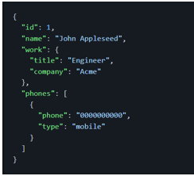Let's say that John has been promoted to senior engineer and we want to keep our contact list updated. We could modify this resource using a PUT request, as shown below:
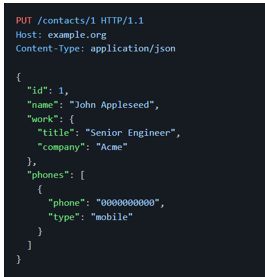With PUT, however, we have to send the full representation of the resource even when we need to modify a single field of a resource, which may not be desirable in some situations.
Let's have a look on how the PUT HTTP method is defined in the [RFC 7231][rfc7231], one of the documents that currently define the HTTP/1.1 protocol:
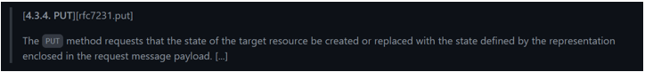So, as per definition, the PUT method is meant to be used for:
Creating resources [1]
Replacing the state of a given resource
The key here is: the PUT payload must be a new representation of the resource. Hence it's not meant for performing partial modifications to resources at all. To fill this gap, the PATCH method was created and it is currently defined in the [RFC 5789][rfc5789]:
The difference between the PUT and PATCH requests is reflected in the way the server processes the request payload to modify a given resource:
● In a PUT request, the payload is a modified version of the resource stored on the server. And the client is requesting the stored version to be replaced with the new version.
● In a PATCH request, the request payload contains a set of instructions describing how a resource currently stored on the server should be modified to produce a new version.
The PATCH method definition, however, doesn't enforce any format for the request payload apart from mentioning that the request payload should contain a set of instructions describing how the resource will be modified and that set of instructions is identified by a media type.
Let's have a look at some formats for describing how a resource is to be patched:
JSON Patch is a format for expressing a sequence of operations to be applied to a JSON document. It is defined in the [RFC 6902][rfc6902] and is identified by the application/json-patch+json media type.
The JSON Patch document represents an array of objects and each object represents a single operation to be applied to the target JSON document.
The evaluation of a JSON Patch document begins against a target JSON document and the operations are applied sequentially in the order they appear in the array. Each operation in the sequence is applied to the target document and the resulting document becomes the target of the next operation. The evaluation continues until all operations are successfully applied or until an error condition is encountered.
The operation objects must have exactly one op member, whose value indicates the operation to perform:
Any other values are considered errors.
A request to modify John's job title could be:
JSON Merge Patch is a format that describes the changes to be made to a target JSON document using a syntax that closely mimics the document being modified. It is defined in the [RFC 7396][rfc7396] is identified by the application/merge-patch+json media type.
The server processing a JSON Merge Patch document determine the exact set of changes being requested by comparing the content of the provided patch against the current content of the target document:
1. If the merge patch contains members that do not appear within the target document, those members are added
2. If the target does contain the member, the value is replaced.
3. null values in the merge patch indicate that existing values in the target document are to be removed.
4. Other values in the target document will remain untouched
A request to modify John's job title could be:
JSON-P 1.0, defined in the JSR 353 and also known as Java API for JSON Processing 1.0, brought official support for JSON processing in Java EE. JSON-P 1.1, defined in the JSR 374, introduced support for JSON Patch and JSON Merge Patch formats to Java EE.
Let's have a quick look at the API to start getting familiar with it:
To patch using JSON Patch, we would have the following:
And to patch using JSON Merge Patch, we would have the following:
Having said that, let me highlight that JSON-P is just an API, that is, a set of interfaces. If we want to work with it, we need an implementation such as [Apache Johnzon][johnzon]:
To parse a PATCH request payload, we must take the following into account:
For an incoming request with the application/json-patch+json content type, the payload must be converted to an instance of [JsonPatch][javax.json.JsonPatch].
For an incoming request with the application/merge-patch+json content type, the payload must be converted to an instance of [JsonMergePatch][javax.json.JsonMergePatch].
Spring MVC, however, doesn't know how to create instances of [JsonPatch][javax.json.JsonPatch] and [JsonMergePatch][javax.json.JsonMergePatch]. So we need to provide a custom [HttpMessageConverter
For convenience, let's extend [AbstractHttpMessageConverter
The constructor will invoke the parent's constructor indicating the supported media type for this converter:
We indicate that our converter supports the [JsonPatch][javax.json.JsonPatch] class:

Then we implement the method that will read the HTTP request payload and convert it to a [JsonPatch][javax.json.JsonPatch] instance:
It's unlikely we'll need to write [JsonPatch][javax.json.JsonPatch] instances to the responses, but we could implement it as follows:
The message converter for [JsonMergePatch][javax.json.JsonMergePatch] is pretty much the same as the converter described above (except for the types handled by the converter):
With the HTTP message converters in place, we can receive [JsonPatch][javax.json.JsonPatch] and [JsonMergePatch][javax.json.JsonMergePatch] as method arguments in our controller methods, annotated with [@RequestBody][org.springframework.web.bind.annotation.RequestBody]:
It is worth it to mention that both JSON Patch and JSON Merge Patch operate over JSON documents.
So, to apply the patch to a Java bean, we first need to convert the Java bean to a JSON-P type, such as [JsonStructure][javax.json.JsonStructure] or [JsonValue][javax.json.JsonValue]. Then we apply the patch to it and convert the patched document back to a Java bean:
These conversions could be handled by Jackson, which provides an [extension module][jackson-datatype-jsr353] to work with JSON-P types. With this extension module, we can read JSON as [JsonValue][javax.json.JsonValue]s and write [JsonValue][javax.json.JsonValue]s as JSON as part of normal Jackson processing, taking advantage of the powerful data-binding features that Jackson provides:
With module extension dependency on the classpath, we can configure the [ObjectMapper][com.fasterxml.jackson.databind.ObjectMapper] and expose it as a Spring [@Bean][org.springframework.context.annotation.Bean] (so it can be picked up by String and can be injected in other Spring beans):
The[findAndRegisterModules()][com.fasterxml.jackson.databind.ObjectMapper.findAndRegisterModules] method is important here: it tells Jackson to search and register the any modules found in the classpath, including the [jackson-datatype-jsr353][jackson-datatype-jsr353] extension module. Alternatively, we can register the module manually:
Once the [ObjectMapper][com.fasterxml.jackson.databind.ObjectMapper] is configured, we can inject it in our Spring beans and create a method to apply the JSON Patch to a Java bean:
And here's the method to patch using JSON Merge Patch:
With this in place, the controller method implementation for JSON Patch could be like:
And the implementation is quite similar for JSON Merge Patch, except for the media type and for the types handled by the method:
Once the patch has been applied and before persisting the changes, we must ensure that the patch didn't lead the resource to an invalid state. We could use [Bean Validation annotations][javax.validation.constraints] to define constraints and then ensure that the state of the model is valid.
To perform the validation, we could inject [Validator][javax.validation.Validator] in our class and invoke the [validate()][javax.validation.Validator.validate] method. If any constraint has been violated, it will return a set of [ConstraintViolation
Alternatively, we could simply annotate the method with [@Valid][javax.validation.Valid] and Bean Validation will take care of performing the the validation on the returned value (the Spring bean may need to be annotated with [@Validated][org.springframework.validation.annotation.Validated] to trigger the validation):
The models that represent the domain of our application and the models that represent the data handled by our API are (or at least should be) different concerns and should be decoupled from each other. We don't want to break our API clients when we add, remove or rename a field from the application domain model.
While our service layer operates over the domain/persistence models, our API controllers should operate over a different set of models. As our domain/persistence models evolve to support new business requirements, for example, we may want to create new versions of the API models to support these changes. We also may want to deprecate the old versions of our API as new versions are released. And it's perfectly possible to achieve when the things are decoupled.
To minimize the boilerplate code of converting the domain model to the API model (and vice versa), we could rely on frameworks such as [MapStruct][mapstruct]. And we also could consider using [Lombok][lombok] to generate getters, setters, equals(), hashcode() and toString() methods for us.
By decoupling the API model from domain model, we also can ensure that we expose only the fields that can be modified. For example, we don't want to allow the client to modify the id field of our domain model. So our API model shouldn't contain the id field (and any attempt to modify it may cause an error or may be ignored).
In this example, the domain model class is called Contact and the model class that represents a resource is called ContactResourceInput. To convert between these two models with MapStruct, we could define a mapper interface and MapStruct will generate an implementation for it:
The ContactMapper implementation will be exposed as a Spring [@Component][org.springframework.stereotype.Component], so it can be injected in other Spring beans. Let me highlight that MapStruct doesn't use reflections. Instead, it creates an actual implementation for the mapper interface and we can even check the code if we want to.
Once the ContactMapper is injected in our controller, we can use it to handle the model conversion. Here's what the controller method for handling PATCH requests with JSON Patch could be like:
And, for comparison purposes, here's a controller method for handling PUT requests:
In December 2014 thousands of pages based on WordPress suffered a large amount of cyber attacks. The problem boils down to a Local File Inclusion (LFI) vulnerability, a widely used plugin in WordPress templates, Revolution Slider (revslider).
This is a serious problem, which allows the attacker access to system files without any restrictions, for example the file /etc/passwd or the WordPress wp-config.php file, which has the authentication data with the system database.

The solution to the vulnerability patch is updating the plugin to the latest version, however, this can bring some compatibility problems and dependence on certain systems. To this end, a corrective patch is herein distributed.
In order to resolve this vulnerability you have two possibilities:
-> Using a bash script provided with the patch, or if you are an experienced user.
-> Use the corrective patch directly in the file.
The file to be updated is as follows: image_view.class.php, and can be found on the directories described below.
To use it, enter in the command line:
or
For experience users, use:
At the end, the follows message is presented in terminal: patching file {wordpress_path}/wp-content/plugins/revslider/inc_php/image_view.class.php
For Minecraft users: The full path to the jar needs to be added in the above argument unless the jar is put into the instance (or .minecraft) folder. This jar does not go into the mods folder.
This module allows Ruby programs to interface with the SQLite3 database engine (http://www.sqlite.org). You must have the SQLite engine installed in order to build this module.
Note that this module is NOT compatible with SQLite 2.x.
require sqlite3
Open a database
db = SQLite3::Database.new test.db
Install SQLite3, enabling option SQLITE_ENABLE_COLUMN_METADATA (see www.sqlite.org/compile.html for details).
Then do the following:
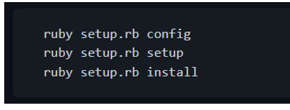Alternatively, you can download and install the RubyGem package for SQLite3/Ruby (you must have RubyGems and SQLite3 installed, first):
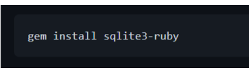If you have sqlite3 installed in a non-standard location, you can specify the location of the include and lib files by doing:
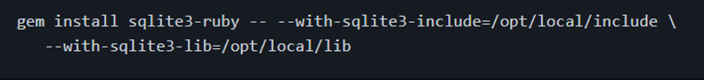For help figuring out the SQLite3/Ruby interface, check out the FAQ. It includes examples of usage. If you have any questions that you feel should be address in the FAQ, please send them to ojhakushagra73@gmail.com
Grunt and Grunt plugins are installed and managed via npm, the Node.js package manager. Grunt 0.4.x requires stable Node.js versions >= 0.8.0.
Before setting up Grunt ensure that your npm is up-to-date by running npm update -g npm (this might require sudo on certain systems).
If you already have installed Grunt and are now searching for some quick reference, please checkout our Gruntfile example and how to configure a task.
Each time grunt is run, it looks for a locally installed Grunt using node's require() system. Because of this, you can run grunt from any subfolder in your project.
If a locally installed Grunt is found, the CLI loads the local installation of the Grunt library, applies the configuration from your Gruntfile, and executes any tasks you've requested for it to run. To really understand what is happening, read the code.
Assuming that the Grunt CLI has been installed and that the project has already been configured with a package.json and a Gruntfile, it's very easy to start working with Grunt:
A typical setup will involve adding two files to your project: package.json and the Gruntfile.
package.json: This file is used by npm to store metadata for projects published as npm modules. You will list grunt and the Grunt plugins your project needs as devDependencies in this file.
Gruntfile: This file is named Gruntfile.js or Gruntfile.js and is used to configure or define tasks and load Grunt plugins. When this documentation mentions a Gruntfile it is talking about a file, which is either a Gruntfile.js or a Gruntfile.js.
The package.json file belongs in the root directory of your project, next to the Gruntfile, and should be committed with your project source. Running npm install in the same folder as a package.json file will install the correct version of each dependency listed therein.
There are a few ways to create a package.json file for your project:
The easiest way to add Grunt and grunt plugins to an existing package.json is with the command npm install (module) --save-dev. Not only will this install (module) locally [note: use <> instead of ().], but it will automatically be added to the devDependencies section, using a tilde version range.
For example, this will install the latest version of Grunt in your project folder, adding it to your devDependencies:
The same can be done for grunt plugins and other node modules. As seen in the following example installing the JSHint task module:
Checkout the current available grunt plugins to be installed and used on your project at the plugins page.
Be sure to commit the updated package.json file with your project when you're done!
In the following Gruntfile, project metadata is imported into the Grunt config from the project's package.json file and the grunt-contrib-uglify plugin's uglify task is configured to minify a source file and generate a banner comment dynamically using that metadata. When grunt is run on the command line, the uglify task will be run by default.
Now that you've seen the whole Gruntfile, let's look at its component parts.
Every Gruntfile (and grunt plugin) uses this basic format, and all of your Grunt code must be specified inside this function:
Most Grunt tasks rely on configuration data defined in an object passed to the grunt.initConfig method.
In this example, grunt.file.readJSON('package.json') imports the JSON metadata stored in package.json into the grunt config. Because <% %> template strings may reference any config properties, configuration data like file paths and file lists may be specified this way to reduce repetition.
You may store any arbitrary data inside of the configuration object, and as long as it doesn't conflict with properties your tasks require, it will be otherwise ignored. Also, because this is JavaScript, you're not limited to JSON; you may use any valid JS here. You can even programmatically generate the configuration if necessary.
Like most tasks, the grunt-contrib-uglify plugin's uglify task expects its configuration to be specified in a property of the same name. Here, the banner option is specified, along with a single uglify target named build that minifies a single source file to a single destination file.
Many commonly used tasks like concatenation, minification and linting are available as grunt plugins. As long as a plugin is specified in package.json as a dependency, and has been installed via npm install, it may be enabled inside your Gruntfile with a simple command:
You can configure Grunt to run one or more tasks by default by defining a default task. In the following example, running grunt at the command line without specifying a task will run the uglify task. This is functionally the same as explicitly running grunt uglify or even grunt default. Any number of tasks (with or without arguments) may be specified in the array.
If your project requires tasks not provided by a Grunt plugin, you may define custom tasks right inside the Gruntfile. For example, this Gruntfile defines a completely custom default task that doesn't even utilize task configuration:
Custom project-specific tasks don't need to be defined in the Gruntfile; they may be defined in external .js files and loaded via the grunt.loadTasks method.
WordPress' core templates contain some inline styling and scripting elements that must be dealt with in order to implement a proper Content Security Policy (CSP).
By applying these patches, a nonce attribute is added to inline (script) and (style) tags in the relevant source files. The attribute value is a secret placeholder value that the web server will replace with a random nonce that changes with each request. The nonce proves that inline scripts and styles originate from the web application itself, so that it will not be blocked when the client enforces the Content Security Policy. See my blog posting about this project for more details.
[Note: Use <> instead of ()
Please note that the elements patched here are the ones causing trouble for my specific WordPress installation. However, there might be even more unpatched inline scripts and styles in the core that I have not yet encountered. Feel free to create an issue or pull request where you suggest additional patches.
I Don't Hack Wordpress' Core -- although that's exactly what these patches do. There are a couple of reasons why. First and foremost, the patches do not change anything substantial in the code. It merely appends an extra, static attribute to inline (script) and (style) tags. Updating or reinstalling WordPress will revert the patches, which is fine. Then you will have to run the apply.sh script again, or bail out and allow unsafe-inline in your CSP header. The patch files can be easily inspected to check what modifications are made. That is good from a security perspective. Besides, this is a temporary fix, as I expect inline scripts and styles to be removed from WordPress within a few iterations.
[Note: Use <> instead of ()For this to work, Nginx must be configured with two additional modules:
-> ngx_set_misc for random nonce generation
-> http_sub_module for search and replace functionality
Please refer to Scott Helme's excellent description on how to implement CSP Nonce support in Nginx for details about compiling Nginx with these two modules.
Suggested server settings for your Nginx site configuration can be found in the generated file wp-csp-patch/nginx_site.conf.
Basically, the web server searches for the secret placeholder string and replaces it with a one-shot nonce value that is referred to by the CSP header. This confirms to the client that the inline (script) or (style) tags in question are legitimate and not from someone attempting an injection attack.
Although the author has attempted to find and correct any bugs in the free software programs, the author is not responsible for any damage or losses of any kind caused by the use or misuse of the programs. The author is under no obligation to provide support, service, corrections, or upgrades to the free software programs.
Ansible playbook to remove support of ssl3 from browser (POODLE vulnerability)
https://www.ssllabs.com/ssltest/viewMyClient.html
chromium on ubuntu
ansible-playbook -i "localhost," -c local patch-ssl3-poodle.yml --sudo -K
Correctly encoded in different locations
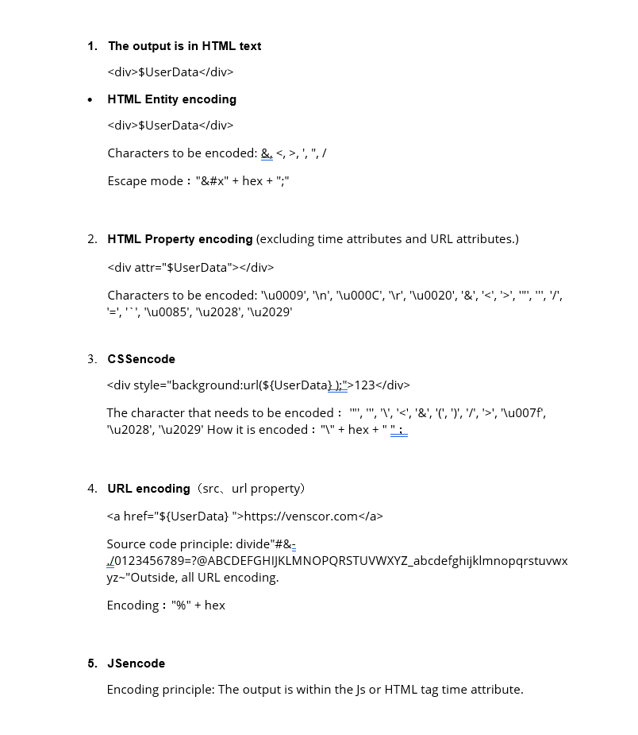Meet Our Developers
Kushagra Ojha

Ankit Nainwal
Riya Mishra